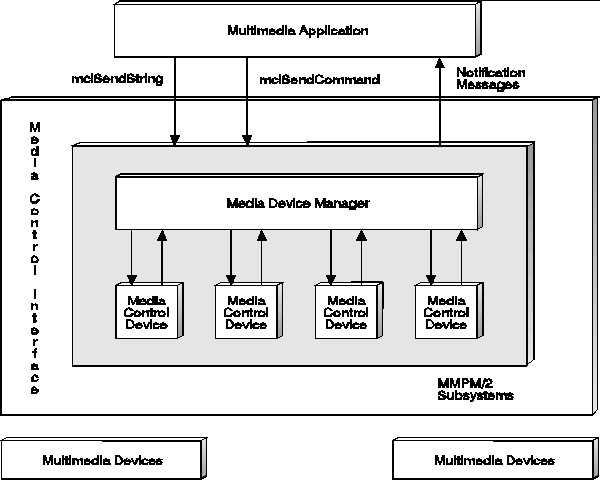

The media control interface provides the primary mechanism for application control of media devices. The top layer consists of the Media Device Manager (MDM), which provides resource management for media devices. The bottom layer consists of media control drivers (MCDs)-dynamic link libraries that implement the function of a media device.
Applications interact with the media control interface (and thus with media devices) in two ways, through either a procedural interface (mciSendCommand) or a string interface (mciSendString). However, before an MCD can interpret a string command, the MDM must use a command table to change the string into an equivalent procedural command.
MCDs do not directly control hardware devices. Instead, they pass commands through a subsystem or physical device driver interface. This arrangement frees MCDs from having to be knowledgeable about the hardware in order to implement its function. However, MCDs have to be knowledgeable about the means of implementing that function. For example, a CD-Audio player that is implemented using a CD-ROM drive with a built-in Digital-to-Analog Converter (DAC) can perform its function by simply issuing device IOCtl commands to the drive's device driver. However, a CD-Audio player that uses a separate Digital Signal Processor (DSP) for playback of the digital audio data is implemented quite differently, calling functions to manage a DSP coprocessor and data transfer between the drive and the coprocessor.
MCDs can also use the services of the other OS/2 multimedia subsystems such as the Stream Programming Interface (SPI). This subsystem provides data streaming services that allow stream-handlers to control the flow of data from one device to another in real time, maintaining a continuous flow of data between physical devices.